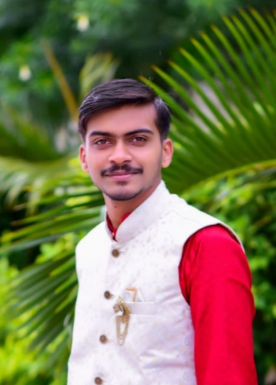

Pranav Darokar Resume

Objective:
Seeking a challenging and dynamic position in web development where my passion and skills can be leveraged to create innovative and user-centric web solutions.
About Me:
I am a second-year student with a strong passion for web development. From a young age, I have been captivated by the power of the internet to connect people and businesses globally. My enthusiasm for this field has only grown over the years, and I am excited to embark on a career that allows me to turn my passion into impactful web applications and experiences
Key Qualifications:
- Proficient in HTML, CSS, and JavaScript, with a focus on creating responsive and visually appealing web designs.
- Familiar with front-end frameworks such as React and Vue.js, and eager to learn more about cutting-edge technologies.
- Committed to staying updated with the latest web development trends and best practices
- Strong problem-solving skills and the ability to work effectively both independently and in a team.
- A creative thinker with an eye for design and user experience, striving to create websites that not only function flawlessly but also engage and delight users
Projects:
Personal Portfolio Website
- Designed and developed my personal portfolio website from scratch to showcase my web development skills and projects.
- Utilized HTML, CSS, and JavaScript to create a responsive and visually appealing user interface
Education
- Bachlor of Engineering (Entc)
Currently in second-year
October 2022-present
- HSC
percentage 85.33
2019-2021
- SSC
percentage 82.20
skills
- Front-End Development: HTML, CSS, JavaScript, React, Vue.js
- Version Control: Git/GitHub
- UI/UX Design Principles
- Responsive Web Design
- Problem-Solving and Debugging
Interests:
Apart from web development, I am passionate about staying updated with industry trends, participating in hackathons, and continually improving my coding skills.
About me
Contact Me